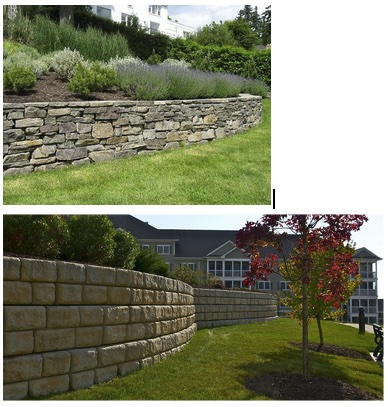

Experiment 4 - Infinite Worlds
Description
My partner, Gabe Ahrens, and I collaborated an idea of what we both should do for our world generator. We thought of making a rock wall generator with small creatures crawling on it. This is the inspiring picture it's based off of: 
Technical
preloud function loads all of the images I drew
spawnBugs functions sets the position and the speed of the bugs.
setup function sets up the snails positions and the drawBefore functions makes the snails slowly drift.
drawAfter function makes the bugs moves across the screen
drawTiles function generated the brick wall like world along with the snail image. It also places the images of the slugs, and has the clicks be slugs.
Reflection
I worked on this with a parnter, Gabe Ahrens. We ended up making our own versions of our inspirations. I felt like we did equal work on our own world generators. I was having more of a hard time making the slugs from the clicker appear on the wall. It kept hiding behind the tiles. I feel like I did okay on this assignment. I wasn't feeling too well when I finished this project so I feel like I could have put more effort into it if I had more time, and if I didn't feel so unwell.